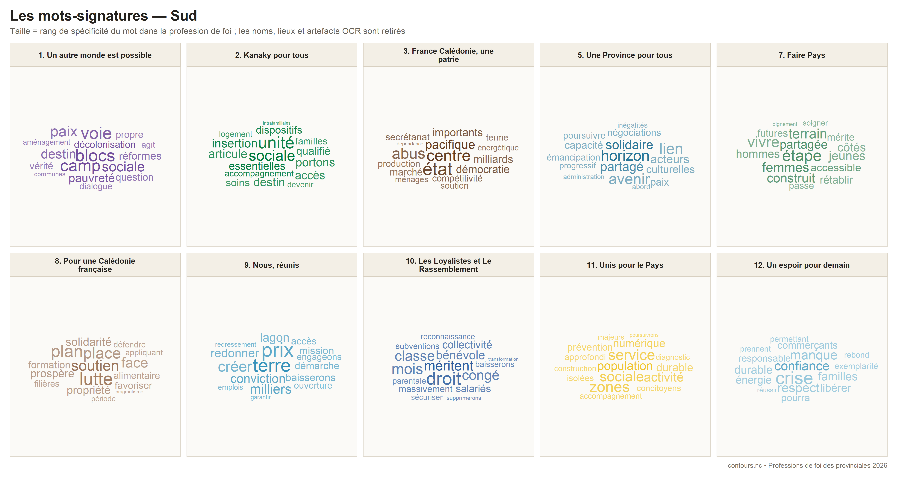
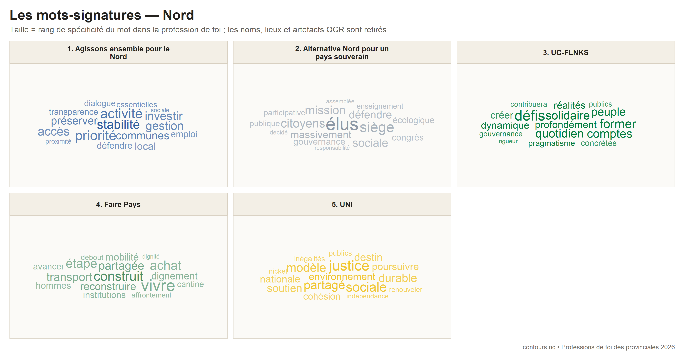
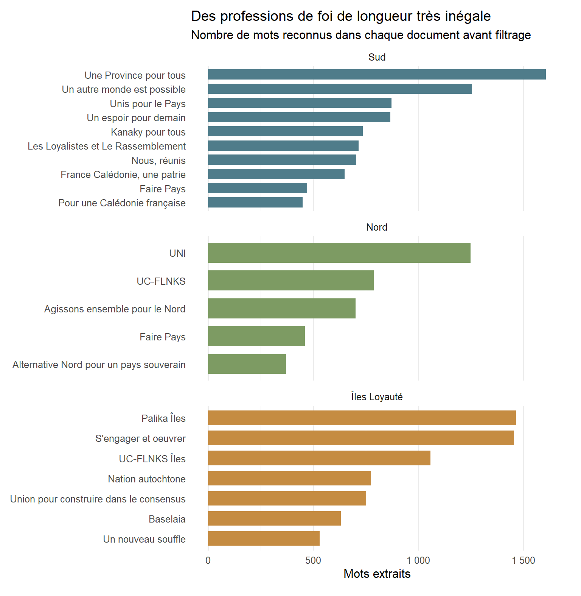

Priorités, propositions et lignes de partage entre les listes
Une analyse textuelle et une lecture détaillée des 22 professions de foi numériques des provinciales 2026 : thèmes dominants, mesures proposées et degré de précision des programmes.
Élections
Provinciales 2026
Analyse textuelle
Data mining
Auteur·rice
Jonas Brouillon
Date de publication
21 juin 2026
Que défend chaque liste, et surtout comment compte-t-elle agir ? Les 22 professions de foi numériques permettent de dresser une fiche d’identité de chaque candidature : sujets privilégiés, angle politique, instruments proposés et degré de précision du texte.
22
circulaires analysées
sur 24 listes candidates
18 554
mots extraits
avant nettoyage du corpus
8
textes très détaillés
dispositifs nommés, montants ou objectifs précis
À lire comme une cartographie des tracts, pas comme une notation des programmes. Les mesures ci-dessous sont reformulées au plus près des circulaires. Elles ne sont ni vérifiées, ni chiffrées à nouveau, ni évaluées quant à leur faisabilité. Le badge indique seulement le degré de détail du document : objectifs généraux, mesures identifiables ou engagements particulièrement détaillés.
La campagne en un coup d’œil
Province Sud
Le choix le plus éclaté : baisse des prélèvements et fermeté, boucliers sociaux et insertion, ou reconstruction transversale. La vie chère est presque partout, mais les instruments proposés divergent fortement.
Province Nord
Les textes convergent sur l’emploi, la jeunesse et les services de proximité. Les différences portent surtout sur l’Usine du Nord, la méthode de gestion et la place de la souveraineté dans le programme provincial.
Îles Loyauté
Finances provinciales et transports structurent la campagne. Les listes se distinguent par le niveau de chiffrage, la place donnée aux valeurs coutumières et la manière de transformer l’autonomie locale en souveraineté.
Comment lire les fiches ?
Trois niveaux de lecture sont volontairement séparés.
Les portraits thématiques donnent les quatre points d’entrée qui structurent chaque circulaire. Ils viennent de la lecture complète du texte : ils sont plus directs qu’un comptage, mais assument une part de synthèse éditoriale.
Les nuages de mots-signatures retiennent jusqu’à seize termes particulièrement distinctifs dans la province. Les mots répétés dans le tract sont conservés ; un mot cité une seule fois n’entre dans le nuage que s’il est déjà bien attesté ailleurs dans le corpus. Un gros mot caractérise donc le vocabulaire propre du tract, sans nécessairement être son mot le plus fréquent en valeur absolue.
Les fiches programmatiques viennent d’une relecture du document complet. L’encadré résume sa ligne propre ; les pastilles donnent ses thèmes ; les trois puces restituent les mesures ou engagements les plus caractéristiques.
Les listes sont toujours présentées dans l’ordre du tirage au sort. Aucune projection statistique ne les range sur un axe politique implicite.
Province Sud : trois familles de réponses
Dans le Sud, la crise économique et la vie chère sont des diagnostics partagés. Trois familles de réponses se dessinent toutefois : agir sur les taxes, les droits de douane et le coût du travail ; renforcer les aides, les prix protégés et l’insertion ; ou reconstruire la confiance avant de stabiliser l’avenir institutionnel. La sécurité constitue un deuxième clivage, entre fermeté pénale et traitement plus social de la jeunesse.
Les priorités affichées dans le Sud
Liste 1
Un autre monde est possible
Transversal / pro-pays
Cohésion et dialogue
Urgence sociale
Réforme fiscale
Démocratie participative
Liste 2
Kanaky pour tous
Indépendantiste / souverainiste
Vie chère
Protection sociale
Jeunesse et insertion
Souveraineté
Liste 3
France Calédonie, une patrie
Non-indépendantiste
Relance et BTP
Sécurité
Énergie nucléaire
Ancrage français
Liste 5
Une Province pour tous
Non-indépendantiste
Solidarité territoriale
Réduction des inégalités
Vivre-ensemble
Émancipation négociée
Liste 7
Faire Pays
Transversal / pro-pays
Pouvoir d’achat
Services essentiels
Institutions
Souveraineté par étapes
Liste 8
Pour une Calédonie française
Non-indépendantiste
Sécurité et autorité
Vie chère
Citoyenneté
Monde rural
Liste 9
Nous, réunis
Non-indépendantiste
Vie chère
Entreprises
Production locale
Gouvernance
Liste 10
Les Loyalistes et Le Rassemblement
Non-indépendantiste
Sécurité
Fiscalité
Entreprises
Propriété
Liste 11
Unis pour le Pays
Indépendantiste / souverainiste
Solidarité
Logement et santé
Économie locale
Souveraineté partenariale
Liste 12
Un espoir pour demain
Non-indépendantiste
Stabilité institutionnelle
Économie
Pouvoir d’achat
Exemplarité publique
Les mots-signatures du Sud

Les mots sont regroupés par racine : singulier et pluriel ne comptent donc qu’une fois. La taille repose sur leur spécificité dans la province (TF-IDF), après retrait des noms de candidats, des lieux, du vocabulaire électoral générique et des artefacts OCR.
Liste 1Mesures identifiées
Un autre monde est possible
Transversal / pro-pays
Sortir de la logique des blocs par la paix sociale, la participation citoyenne et une refonte économique et sociale.
Cohésion et dialogueUrgence socialeRéforme fiscaleDémocratie participative
Mesures ou engagements mis en avant
Aménagements temporaires de fiscalité et de cotisations pour le pouvoir d’achat et la relance des entreprises.
Rétablissement d’aides sociales ciblées, évaluées et concentrées sur les ménages précaires.
Assemblées citoyennes et réforme du système fiscal et social avec les partenaires sociaux.
Province Nord : des priorités proches, des leviers différents
Les cinq textes parlent tous de développement économique, de jeunesse et de services accessibles dans les communes éloignées. La différence tient aux leviers. Agissons ensemble insiste sur la continuité de gestion ; UC-FLNKS sur la reprise de l’Usine du Nord et la reddition de comptes ; UNI détaille une doctrine nickel à maîtrise publique et un programme de rééquilibrage ; Alternative Nord propose un vaste renouvellement des politiques publiques sans beaucoup préciser les instruments ; Faire Pays transpose son triptyque dignité–institutions–souveraineté progressive.
Les priorités affichées dans le Nord
Liste 1
Agissons ensemble pour le Nord
Non-indépendantiste
Finances provinciales
Économie et mines
Jeunesse
Santé de proximité
Liste 2
Alternative Nord pour un pays souverain
Indépendantiste / souverainiste
Politiques publiques
Jeunesse
Culture et interculturalité
Pleine souveraineté
Liste 3
UC-FLNKS
Indépendantiste / souverainiste
Usine du Nord
Services de proximité
Désenclavement
Gouvernance
Liste 4
Faire Pays
Transversal / pro-pays
Pouvoir d’achat
Services essentiels
Institutions
Souveraineté par étapes
Liste 5
UNI
Indépendantiste / souverainiste
Nickel public
Rééquilibrage
Justice sociale
Environnement
Les mots-signatures du Nord

Mots distinctifs de chaque circulaire par rapport aux quatre autres textes du Nord.
Liste 1Orientations générales
Agissons ensemble pour le Nord
Non-indépendantiste
Une union non-indépendantiste centrée sur la rigueur financière, la reprise économique et les services de proximité.
Finances provincialesÉconomie et minesJeunesseSanté de proximité
Mesures ou engagements mis en avant
Préserver les services essentiels, les aides aux communes et les investissements utiles par une gestion financière rigoureuse.
Soutenir entreprises, agriculture, pêche, tourisme et reprise minière et métallurgique.
Renforcer formation, apprentissage et insertion, ainsi que les soins dans les communes éloignées.
Trois verbes traversent presque tout le corpus loyaltien : redresser les finances, relier les îles et produire davantage sur place. Les contrastes portent moins sur le diagnostic que sur la précision et l’architecture des solutions. S’engager et œuvrer, Palika Îles et Baselaia donnent des objectifs, montants ou dispositifs très identifiables ; Un nouveau souffle, UC-FLNKS Îles et UCC formulent davantage une méthode et un cap ; Nation autochtone organise son programme autour de la justice sociale et de la gouvernance autochtone.
Les priorités affichées aux Îles
Liste 1
Palika Îles
Indépendantiste / souverainiste
Redressement financier
Transport
Santé
Autonomie productive
Une liste chrétienne et coutumière axée sur l’équité, la transparence administrative et l’investissement dans la jeunesse.
ÉquitéJeunesseGouvernanceÉconomie locale
Mesures ou engagements mis en avant
Affecter pendant cinq ans les indemnités nettes de la tête de liste — plus de 30 millions de F CFP annoncés — à la formation et aux microprojets des jeunes.
Plan de désendettement, diagnostic territorial, permanence du président et sanctions contre les absences injustifiées des élus.
Améliorer dessertes et infrastructures, télémédecine, agriculture, pêche, tourisme et transformation locale.
Construire une souveraineté responsable par des finances saines, l’initiative privée et une amélioration ciblée de la qualité de vie.
Gestion financièreÉconomie localeQualité de vieSouveraineté
Mesures ou engagements mis en avant
Rétablir des finances saines et recentrer les politiques provinciales sur des compétences soutenables.
Développer une économie locale créatrice d’emplois par des partenariats favorisant l’initiative entrepreneuriale privée.
Améliorer l’accès à la santé, créer des espaces hybrides culture-sport-loisirs, repenser la mobilité et associer les jeunes aux politiques provinciales.
Bouclier prix famille-retraité et aides restaurées chez Kanaky pour tous ; bouclier alimentaire chez Pour une Calédonie française ; panier de produits essentiels et ticket Tanéo à 200 F chez Nous, réunis !.
Réduire prélèvements et coûts d’importation
Baisse des impôts et du coût du travail, suppression des droits de succession et des droits de douane australiens et néo-zélandais chez Les Loyalistes et Le Rassemblement ; allègement des charges sur le travail chez Faire Pays.
Agir sur les monopoles
Sanctions contre les importateurs et possible ouverture à un second importateur chez France-Calédonie, une patrie ; lutte contre les monopoles chez Pour une Calédonie française.
Produire et transformer localement
Plan « manger local et moins cher » chez Kanaky pour tous ; fonds pour la production locale chez Nous, réunis ! ; agriculture, pêche, coopératives et unités de transformation dans plusieurs listes du Nord et des Îles.
Baisser les coûts de transport et d’énergie
Pass Mobilité chez Faire Pays ; ticket Tanéo à 200 F chez Nous, réunis ! ; baisse du coût de l’énergie chez Un espoir pour demain ; objectif de baisse de l’électricité par le nucléaire chez France-Calédonie, une patrie.
Cibler aides et services essentiels
Aides sociales concentrées sur les ménages précaires chez Un autre monde est possible ; aides à la cantine, au transport et à la scolarité chez Faire Pays ; étude d’un revenu de solidarité citoyenne chez Unis pour le Pays.
Sécurité et jeunesse : sanctionner, prévenir ou insérer
Logique d’action
Exemples de solutions mises en avant
Renforcer la sanction et les moyens judiciaires
Tolérance zéro, moyens supplémentaires pour les forces de l’ordre et responsabilisation parentale chez Les Loyalistes et Le Rassemblement ; nouveau centre pénitentiaire chez France-Calédonie, une patrie ; justice accélérée chez Pour une Calédonie française.
Encadrer par le service civique
Service civique obligatoire pour les jeunes déscolarisés chez France-Calédonie, une patrie ; service civique et Contrat Premier Emploi chez Pour une Calédonie française.
Insérer par l’emploi et la formation
Clauses sociales, parcours d’insertion, travail alternatif et aide au permis chez Kanaky pour tous ; formation et apprentissage chez Agissons ensemble pour le Nord ; microprojets de jeunes chez Baselaia.
Prévenir par les services de proximité
Santé mentale et addictions dans le plan de Unis pour le Pays ; restauration des dispositifs jeunesse et des services de proximité chez UC-FLNKS Nord ; plan emploi-émancipation et justice sociale chez Nation autochtone.
Souveraineté : un horizon, mais aussi une politique sectorielle
Logique d’action
Exemples de solutions mises en avant
Maintenir l’ancrage français
Ancrage dans la République chez France-Calédonie, une patrie et Pour une Calédonie française ; stabilité institutionnelle préalable à la relance chez Un espoir pour demain.
Aller vers la pleine souveraineté
Accession préparée chez Kanaky pour tous ; poursuite des transferts de compétences et des négociations chez Alternative Nord pour un pays souverain ; souveraineté fondée sur le contrôle public du nickel chez UNI.
Construire un partenariat par étapes
Souveraineté partagée et progressive chez Faire Pays ; souveraineté en partenariat avec la France chez Unis pour le Pays ; poursuite négociée de l’émancipation chez Une Province pour tous.
Développer des souverainetés sectorielles
Autonomie alimentaire et énergétique chez Palika Îles et UC-FLNKS Îles ; continuité territoriale, santé et filières locales chez S’engager et œuvrer.
Redonner du pouvoir aux territoires
Capacité de décision des îles, districts et tribus chez UC-FLNKS Îles ; participation accrue des chefferies, femmes et jeunes chez Nation autochtone.
Finances publiques : la contrainte la plus visible aux Îles
Logique d’action
Exemples de solutions mises en avant
Apurer la dette et maîtriser les dépenses
Apurement de plus de 4 milliards de F CFP et évaluation des actions chez Palika Îles ; plan de désendettement chez Baselaia ; finances saines et compétences soutenables chez Union pour construire dans le consensus.
Fixer des objectifs budgétaires chiffrés
Plan 2027-2031 de S’engager et œuvrer : masse salariale à 42–44 %, épargne brute à 8–10 % et 1,2 à 1,5 milliard de F CFP d’investissement annuel.
Rendre la gestion contrôlable
Évaluation systématique chez Palika Îles ; diagnostic territorial, permanence présidentielle et sanctions d’absentéisme chez Baselaia ; feuille de route et comptes rendus annuels chez UC-FLNKS Nord.
Réduire le coût des institutions
Institutions plus efficaces et moins coûteuses chez Faire Pays ; réduction des doublons et des dépenses publiques chez Un espoir pour demain.
Préserver une capacité d’investissement
Investissement productif et filières locales chez Palika Îles, S’engager et œuvrer et UNI ; maintien des services essentiels et des investissements utiles par une gestion rigoureuse chez Agissons ensemble pour le Nord.
Limites
Les fiches sélectionnent trois engagements caractéristiques par document : elles ne reproduisent donc pas toutes les propositions. Le degré de précision qualifie la rédaction du tract, pas la qualité politique du projet. Une mesure chiffrée peut être irréaliste ; une orientation générale peut être cohérente mais peu développée dans ce format.
Les portraits thématiques sont une synthèse de lecture, non un codage indépendant réalisé par plusieurs personnes : leur formulation peut donc être discutée. Les nuages ont la limite inverse. Ils sont calculés de manière reproductible, mais restent sensibles aux mots employés et à leur contexte. Un terme comme « souveraineté » peut être institutionnel, alimentaire ou énergétique ; c’est pourquoi la lecture lexicale et les fiches éditoriales sont présentées ensemble.
Voir la qualité des transcriptions et la chaîne de traitement

Nombre de mots reconnus dans chaque document avant filtrage.
Les PDF ont d’abord été téléchargés avec leur URL, leur taille et leur empreinte MD5. Le texte natif a été conservé lorsqu’il était exploitable ; les documents-images ont été soumis à un OCR français–anglais. Les noms de candidates et candidats, les mots-outils et le vocabulaire administratif du scrutin ont été retirés avant l’analyse lexicale.
Les termes répétés sont conservés ; les termes isolés ne sont admis que si leur racine apparaît au moins quatre fois dans l’ensemble du corpus. Cette règle complète les textes courts sans rouvrir la porte aux fragments OCR uniques.
Les profils programmatiques ont ensuite été établis par relecture des 22 textes. Une mesure est classée « détaillée » lorsqu’elle comporte des dispositifs nommés, plusieurs modalités d’action, un montant, un calendrier ou une cible quantifiée.
Comment lire les fiches ?
Trois niveaux de lecture sont volontairement séparés.
Les listes sont toujours présentées dans l’ordre du tirage au sort. Aucune projection statistique ne les range sur un axe politique implicite.